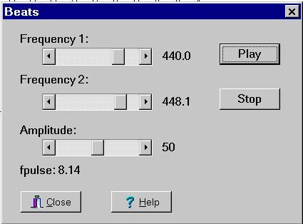
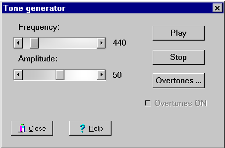
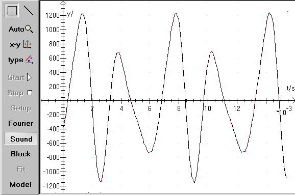
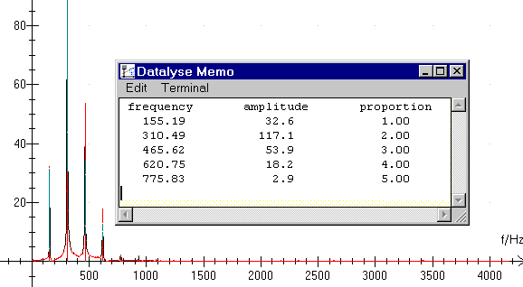

Menu in Datalyse:
Measure sound with Fourier analysis
Beats
Tone generator
Sweep
Amplitude (t, f(t)
Datalyse tests if a soundcard is installed in the PC.
If it has a resolution of 16 bits and the frequencies (5.5125 kHz) 11.025 kHz, 22.05 kHz and 44.1 kHz, then the device is available and it is possible to measure sound with Fourier analysis. Notice that the soundcard does not have to be of any particular type, but the required functions must be supported with a windows interface.
The soundcard can also be used as a tone generator. It is possible to play true tones and rings. Notice that a ring is more than just the constant tone. It is also how the acoustic pattern rises and falls.
If sound measuring does not work, it might be because the input isn't enabled in the soundcard setup. A 16 bits soundcard gives data in the interval [-32768 to 32768]. If the amplitude of the measured data is too small (in hundreds instead of thousands), amplification must be set, see the paragraph below, or the microphone must be replaced so that its amplitude matches the input of the soundcard. You also need a microphone with stereo plug for a soundcard with a stereo plug and vice versa.
In windows you choose volume control | Setup | Properties:
Check »Show Microphone« for recording and make sure it has been checked, now it is possible to record sound.
Improvements March 2000:
Datalyse can read wave files and save sound measurements in wave format.
When measuring and playing sound the number of data points has been changed from 4096 to 100000. This means you can record about 4,5 seconds at 22050 Hz. When reading a wave file only the first 100000 measurements are read.
At continuous Fourier analysis you can transfer time and frequency to the memo. If you press Ctrl down, a Fourier analysis is done and the graph is drawn while measuring. If you press Shift down, time and frequency are transferred to the table and the Fourier analysis isn't done. This gives more measurements per time. Afterwards you can paste the memo into the table and draw a (t,f)-graph.
You can page through the Fourier spectrum with PageUp and PageDown. If you press Alt-PageDown, time and frequency are transferred to the memo. (See above.) In setup you can turn off auto scale at Fourier analysis.
Interface for the soundcard was made by René Hemmingsen.
Beats

A frequency is played on each of the two channels and you can hear the pulse and see the beats on the graph.
Not all frequencies are available, because otherwise an unpleasant sound might be the result.
The sound is send a package of a number of periods. When the package has been played the sound card will start over on the package. Since the package length must be an integer multiplied by the period of frequency 1 as well as frequency 2, not all frequencies are available.
Tone generator:

It is possible to play a tone. Frequency and amplitude are variable.
Remember, to turn up the amplitude on the back of the PC!
This menu topic is under construction, there may be flaws and shortcomings!
This is the data file »OOOHH.WAV«

Press Fourier and Datalyse calculates the Fourier-spectrum below.

Here the Memo is placed on top of the graph. It is preferable to use a good screen resolution and place the memo besides the graph.
The memo stays on top, if you select Always on top in Memo / Edit.
If you zoom in on a top, Fit will also draw an enveloping curve sin(x)/x.
Sweep:
Using the soundcard you can make a sweep with Datalyse. The parameters are set here and the sweep begins when you click on »OK«. Then Datalyse simultaneously plays sound on the speakers and records on the microphone connected to the soundcard. Minimum time per frequency is 0,05s and maximum time per frequency is 4,0s.
Before starting the sweep you have to set up the soundcard to record via the microphone (and only the microphone) and not to play the input from the microphone!
If the checkbox »Measure sound« is checked Datalyse will draw a graph of the microphone signal as a function of the frequency. If the checkbox isn't checked the frequency is depicted as a function of time.
The pc's microphone has an interval of 16 bits [-32767; 32768]. While measuring Datalyse finds the minimum and the maximum of the microphone signal and calculates the amplitude in %.
You can also measure resonance in a cardboard tube and calculate the speed of sound in air using the pc's soundcard. See the exercise instruction on my homepage.
Amplitude:
Using the soundcard you can examine resonance in a tube. This can be a transparent plastic hose or a glass tube.
You can use normal pc speakers or a tone generator as a sound source.
You can for instance set the time per measurement to 2 seconds and move the microphone to the next position once you've heard the sound pulse from the speaker. In the menu above the amplitude will be depicted as a function of position.